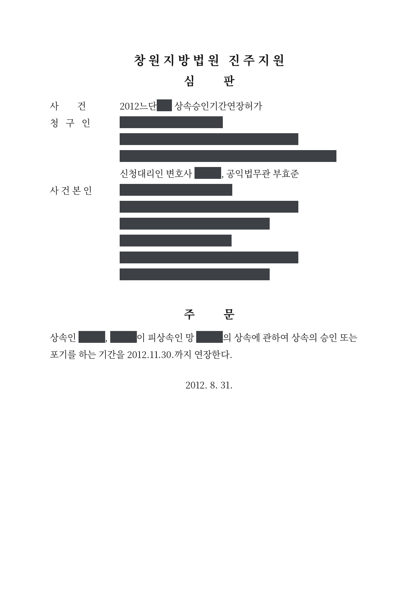
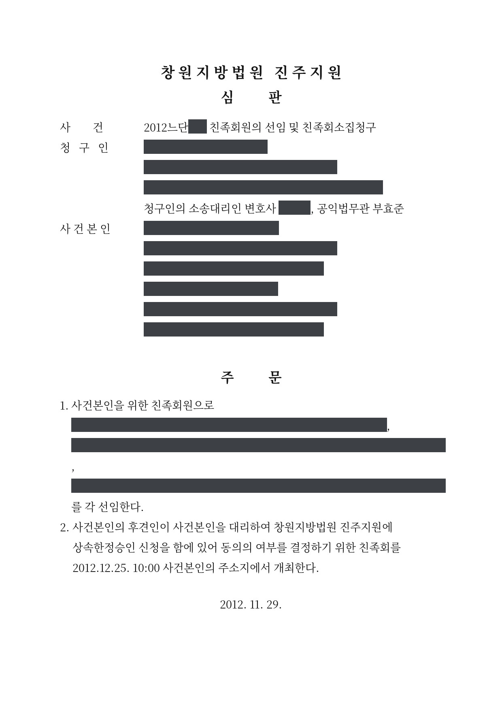

미성년 상속인을 위한 상속 승인·포기 기간 연장 허가 및 친족회원 선임·친족회 소집 심판
창원지방법원 진주지원 · 청구인 대리 · 담당변호사 부효준
판결문


사건의 요지
미성년자인 상속인들이 상속을 승인할지 포기할지 정할 시간을 확보하기 위하여 먼저 상속 승인·포기 기간의 연장 허가를 받고, 이어서 후견인이 미성년자를 대리하여 한정승인을 하는 데 필요한 친족회의 동의를 얻기 위하여 친족회원 선임과 친족회 소집을 청구한 사건입니다. 법원은 두 청구를 모두 받아들였습니다.
비슷한 처분을 받으셨다면
행정처분은 처분이 있음을 안 날부터 90일 이내에 행정심판이나 취소소송으로 다투어야 하고, 기간이 지나면 돌이킬 수 없는 처분은 집행정지를 서둘러야 합니다. 처분서를 받은 날짜부터 확인해 드립니다.